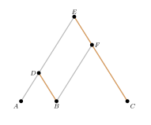
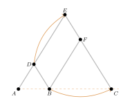
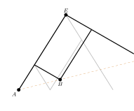

Aufgabe 5.3
Begründen Sie sorgfältig, warum der Pantograph eine zentrische Streckung realisiert.
- Identifizieren Sie das Gelenkparallelogramm
- Nutzen Sie Winkelbeziehungen (Stufen-, Scheitelwinkel)
- Zeigen Sie die Ähnlichkeit der relevanten Dreiecke
- Begründen Sie, warum A, B, C auf einer Geraden liegen
Bezeichnungen wie in der Zeichnung des Skripts: Die Nadel sitzt in $A$, der Fahrstift in $B$, der Zeichenstift in $C$; $D$, $E$, $F$ sind Gelenke. Gebaut ist das Gerät so, dass $\overline{AD}=\overline{DB}=a$ und $\overline{DE}=\overline{BF}=\overline{FC}=c$ ist und $BFED$ ein Parallelogramm bildet; also ist auch $\overline{EF}=\overline{DB}=a$.
Schritt 1: das Gerät
Zu zeigen ist: Es gibt einen festen Faktor $k$, so dass in jeder Stellung $C=\vartheta(A,k)(B)$ gilt. Dann zeichnet $C$ zu jeder Figur, die $B$ abfährt, das gestreckte Bild.
Schritt 2: was das Gelenkviereck festhält

Wie man das Gerät auch bewegt, $BFED$ bleibt ein Parallelogramm, und damit ist immer $DB\parallel EF$. Weil $F$ auf der Stange von $E$ nach $C$ sitzt, heisst das: $DB\parallel EC$. Ausserdem ist $\overline{EC}=\overline{EF}+\overline{FC}=a+c$.
Schritt 3: die Streckung, die $D$ nach $E$ bringt

$D$ und $E$ liegen auf derselben Stange durch $A$. Die Streckung $\vartheta(A,k)$ mit \[k=\frac{\overline{AE}}{\overline{AD}}=\frac{a+c}{a}\] bildet also $D$ auf $E$ ab. Die Strecke $DB$ geht dabei in eine Strecke über, die in $E$ beginnt, zu $DB$ parallel ist (Parallelentreue), in dieselbe Richtung zeigt und $k$-mal so lang ist: $k\cdot a=a+c$. Das ist genau die Strecke $EC$ aus Schritt 2. Also ist $\vartheta(A,k)(B)=C$, und insbesondere liegen $A$, $B$ und $C$ auf einer Geraden.
Schritt 4: in jeder Stellung derselbe Faktor

Bewegt man den Fahrstift, ändern sich alle Winkel, aber keine Stangenlänge. Der Faktor $k=\frac{a+c}{a}$ hängt nur von den Stangenlängen ab. In jeder Stellung ist $C$ also das Bild von $B$ unter derselben Streckung $\vartheta(A,k)$: Der Pantograph realisiert die zentrische Streckung mit Zentrum $A$ und Faktor $k$.
Im Video: Etappe 7 · Strahlensätze bei 4:26